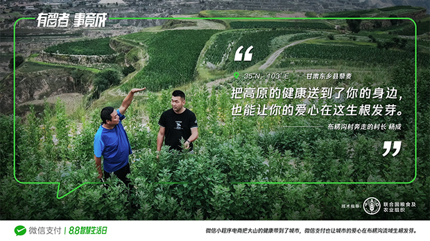
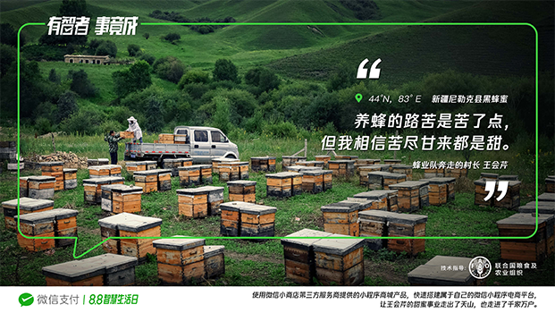
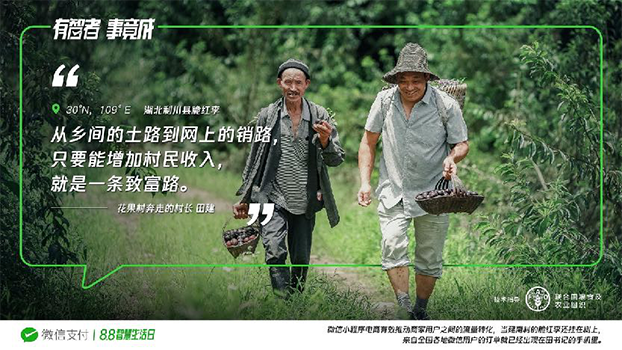

中国有这样一群人：
他们每日奔走在田野山地间，只为把致富的希望带给那些贫瘠的土地。
他们运用知识与智慧，把最新的技术和工具，教给大山里的人，带领人们一步步稳扎稳打，脱贫攻坚，实现乡村复兴。
他们是中国最普通的基层，也是把乡村梦想带出大山的梦想搬运家一—他们是奔走在扶贫一线的中国村长。
最近，微信支付与联合国粮农组织一起，联合发起了公益扶贫助农纪实摄影计划——“奔走的村长”，把镜头对准了这群默默付出的“可爱的人”。
“这些基层村长的奔走，为小农户的生计带来了不一样的曙光，也为联合国可持续发展目标中的‘无贫穷’和‘零饥饿’做出了贡献。他们是值得被记录和被记住的。”联合国粮农组织驻华代表处助理代表张忠军说。
这些真实的影像，记录下了他们在扶贫助农工作的“奔走”画面和那些借助微信支付带动村民致富的智慧故事。
“我对他们始终充满自信，耐得干旱，不怕盐碱，更值得走出大山。”
——布楞沟村第一书记：杨成

布榄沟村的自然环境，老农看了都真摇头。
这个地方常年干旱少雨、气候冷凉、土壤瘠薄，种不了任何常见的农作物。
不过幸好，这里的藜麦和当地人一样顽强。
这种能为人体提供优质蛋白的作物，在极端环境下，反而激发出丰富的营养。
2019年，中石化派驻布楞沟村第一书记杨成，和这种顽强的作物一起，扭转了整个地区的劣势。
杨成带着布楞沟村，加强了与甘肃农科院合作，强化藜麦产品优势。
新一批的种子撒下去，长出来的都是布楞沟村的致富希望。
到了藜麦成熟的日子，中石化也没闲着，联合旗下微信电商小程序“中石化易捷商城”开通了爱心扶贫板块，帮助这些“令人骄傲”的藜麦走出大山。
来自山里的天然健康，被带到了山外消费者身边。来自山外的支持与爱心，也被灌溉在了这片贫瘠的土地上。
中国人，向来擅长于逆境之中，把生活过出生命力。杨成和他的藜麦精神，正在为这个贫困地区带来新的生机。
“都说酒香不怕巷子深，可我总怕村里的好茶没人喝。”
——江口村村委会主任：肖运超
昭平茶卖不出去，其实是消费者的损失。
“地产名茶，味颇佳”，昭平县茶叶种植历史已有千但可能正因历史悠久，该县的茶叶种植模式也偏传统。分散的家庭小规模种植，不利于现代机械化作业，难以形成规模化产业。
直到，肖运超带来了“企农合作，产业改革”的新思肖运超从农户流转茶园到村合作社，村合作社又把茶园与广西昭平县将军峰茶业集团进行租赁管理，打通有机茶园生产链路。
随后，江口村还联合当地微信电商平台——“中国特产·昭平扶贫馆”，开启微信售卖渠道，村里的好茶通过朋友圈和微信群流向了更广的市场。
“公司+合作社+基地+茶农+微信电商”的模式，更辐射带动了茶农合作经营生态茶园1.6万亩，为当地农户提供了1万多个就业岗位，覆盖贫困群众3000多人。
今年是肖运超在江口村工作的第12年，江口村的有机生态茶园已成为昭平企农合作的典型的代表。
下一个12年，昭平的茶香能否飘向世界？我们拭目以待。
“艰苦的日子不会太长久，坚强的我们会一直坚强。”
——凉山村村主任：姬敬松
村主任姬敬松，很“洋气”。
他总是在尝试新东西，并用学到的新技术，替村民们找出路。
脱贫攻坚路上，姬主任的新招总是不断。
他所在的威宁县素有“养乡”名号。
借着这个名号。姬敬松一边带领凉山村，建立了苦养绿色食品原料示范基地，打造独特的产地背书；一边联合当地有名的苦养品牌“可渡河”，打通养麦种植、加工上游产业链，并利用微信小程序电商快速搭建起了品牌微信商城，打通了下游销售环节。
如今，凉山村苦养正在被更多人认识、购买。
而姬敬松并没有停下，依然穿梭在大片养麦花海中，奔走在扶贫一线。
据说最近，他又开始跟随新潮流，学习起了微信小程序直播，为威宁苦养带货。
路从来不是别人铺好，路是自己走出来的。
不断探索新出路的姬主任，正带着勤劳的威宁人，走向更光明的未来。
“吃得苦、霸得蛮，摘颗黄桃解个馋。”
——云里村村支部书记：罗香英
罗香英，一直在和时间赛跑。
云里村种黄桃，是从2010年开始的。靠着黄桃种植收入，村民们的日子好过了许多。
但由于黄桃赏味期仅有半个月，销售期又太长，每年仍有大量鲜果被浪费。
“让村民们的日子再好一点。”
怀着这种朴素的理想，年过半百的村支书，在黄桃成熟前的一个月，就开始在外拉订单了。
疫情中快速席卷全国的直播带货风潮，让这位精明的业务员嗅到了机会，当即与当地电商公司联手创建了线上助农电商——“中国特产·炎陵馆”。
借助微信小程序电商的智慧经营能力，云里黄桃销售实现了提前预售，最大程度避免浪费。
不会拉业务的村支书不是好主播，罗香英也把自己的拉单工作从线下搬到了线上，走进了带货直播间。“在黄桃还没上市的时候，微信上的店铺就已经预定了大半的量。”
今年云里村黄桃产量预估可达2百万斤，但好主播罗香英却再也不用担心了。
“养蜂的路苦是苦了点，但我相信苦尽甘来都是甜。”
——尼勒克县种蜂场蜂业队队长：王会芹

尼勒克县是个好地方，这里不仅是旅游胜地，还是全国著名的黑蜂蜂蜜主产区。
生于这里的王会芹，是个标准的“新疆汉族人”，更是个名副其实的“蜂二代”——她家从父辈开始，就在与蜜蜂打交道。
今年45岁的她，尽管养蜂经验丰富，却十分谦逊：“养蜂这件事要活到老，学到老”。
后来，王会芹发现，不仅养蜂要学，卖蜂蜜也要学。为了让千里之外的人们，尝到来自天山的甜蜜，王会芹所在的蜂业队打造了“天山黑蜂”微信小程序。王会芹也开始学习用微信小程序直播，与消费者互动，分享草原独有的风景和来自自然的馈赠。
通过微信，越来越多的消费者知道了天山黑蜂，也认识了这位来自天山脚下的“女村长”。
在微信小程序电商的支持下，尼勒克县的蜂农已达200余户，年产值达到了1.5亿元。
王会芹从父辈手中接过的“甜蜜的事业”，正在为这片草原带来新的生机。
“从乡间的土路到网上的销路，总要走出一条致富路。”
——花果村第一书记：田建

一个人富起来不算大本事，带着一群人富起来，才叫真能耐。
2015年，响应建南镇实施在外人才回归号召，田建回到了家乡。
在考察花果村环境后，田建联合几个朋友，决定大力发展优质脆红李产业，并在花果村村支两委大力支持下，号召村民组建了“甜李红”种植专业合作社。
2019年起，“甜李红专业合作社”果园基地开始盈利。颇具营销头脑的田建，又举办了首届李子采摘节，吸引游客，打响花果村的“脆红李”名片。
到了2020年，田建不再满足于将李子卖给周边的市民，他有了一个“小理想”——帮花果村村民把李子卖向全国。
于是他将果园基地的李子统一包装，联合“利川优购”微信小程序电商，开辟了“消费扶贫，爱心助农”建南花果村脆红李销售板块，为更多村民提供了便捷的销售渠道。
借助微信小程序完善的电商能力，尚在树上的脆红李早早开启预售。它们将如同田建梦想中的那样，以鲜笔的口感征服全国人民